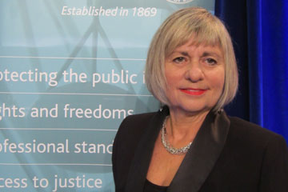

Law Society of BC - "Indigenous Cultural Competency"
February 19th, 2021
I was doing more research on the Law Society of BC, when I stumbled upon this from their website.
Law Society of BC:
TDC_ARTICLE_START
Indigenous intercultural competency and lawyer competence
The Benchers have determined that Indigenous intercultural competency is necessary as part of lawyer competence, and they approved the creation of an online course that will be available to lawyers at no cost to meet this requirement.
Lawyers in BC will be required to take Indigenous intercultural competency training, which will provide lawyers with knowledge on the history of Aboriginal-Crown relations, the history and legacy of residential schools and how legislation regarding Indigenous peoples created the issues that reconciliation seeks to address.
Over the course of 2020, the Law Society will be finalizing the course. The proposed course will take six hours, to be completed at your own pace over two years. Lawyers will be able to claim CPD credit for the time taking the course.
TDC_ARTICLE_STOP
Miriam Kresivo
The above is the former head of the Law Society of BC, but it doesn't matter. What matters is that if you want to practice law in BC, this totally unelected, totally unaccountable organization is going to make you take a 6 hour anti-White course on "muh abos." That's in addition to the other hoops that they make you jump through.
If you want to find a list of all the benchers, the ones who vote on things, there's about 40 of them with some bios here.